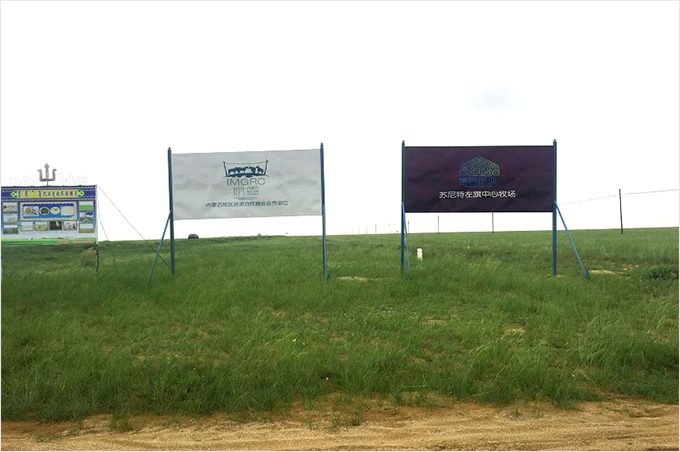
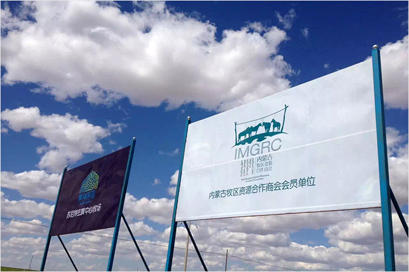
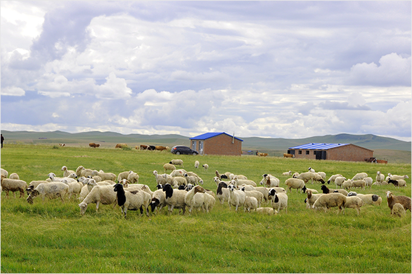
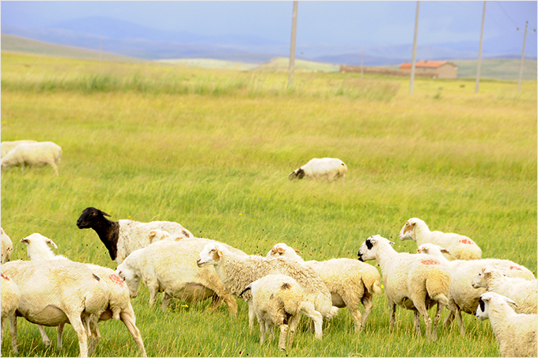
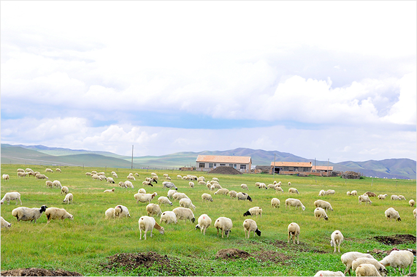
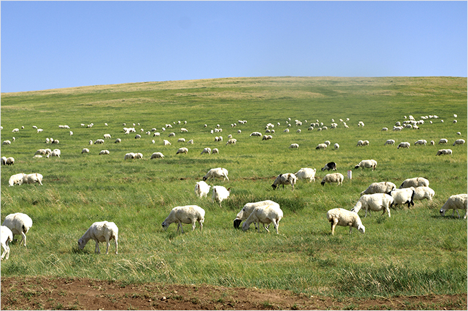

{if $smarty.request.is_ajax neq 1}
{include file="./inc/header.html"}
<div class="page" id='uc_project_survey'>
    <!-- 项目概况-->
    <?php
	$this->_var['back_url'] = wap_url("index","deals#index");
    $this->_var['back_page'] = "#deals";
    $this->_var['back_epage'] = $_REQUEST['epage']=="" ? "#deals" : "#".$_REQUEST['epage'];
    ?>
    {include file="./inc/notfooter_title.html"}
    <div class="content bgCo">
        {/if}
        <!-- 这里是页面内容区 -->
        <div class="logo"></div>
        <h3>草原上的交易专家</h3>
        <div class="brief_introduction">
            <div>一、项目简介</div>
            <p>本项目是由蒙蓝科技，蒙高丽亚和牧区资源合作商会联合推出的线上养羊项目，您关注“财富牧场平台”微信公众号，在线上购买一只属于您自己的小羊羔，羊羔由我们的牧民精心照料，在大草原上自由成长。羊只出栏后，您可选择收回您的本金和养殖回报，也可以申请兑换原生态羔羊肉礼盒（15kg左右白条羊）。</p>
        </div>
        <div class="illustration01"></div>
        <div class="brief_introduction">
            <div>二、牧场简介</div>
            <p>美丽富饶的锡林郭勒大草原，生长着高贵而肥美的苏尼特羊。财富牧场联合牧区资源合作商会与蒙高丽亚共同整合的牧场面积高达300万亩，供养着26万多只羊宝宝。</p>
        </div>
        <div class="brief_introduction">
            <div>三、牧场风景</div>
            <ul>
                <li></li>
                <li></li>
                <li></li>
                <li></li>
                <li></li>
                <li></li>
            </ul>
        </div>
        {if $smarty.request.is_ajax neq 1}
        {include file="./inc/footer.html"}
        {/if}